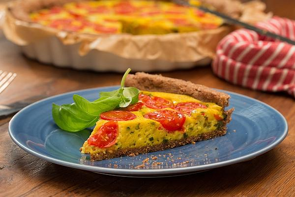

Vegane Tomaten-Quiche
Schwierigkeitsgrad: ★★★☆☆
Köstliche Quiche mit Kirschtomaten und Tofukäse – perfekt für Partys,
zum Brunch oder Abendessen. Die Tomatentarte schmeckt definitiv nicht nur im Sommer!
So eine vegane Tomaten-Quiche ist wirklich ein tolles, sommerliches Essen: Einfach zu backen,
schön anzusehen und gut vorzubereiten. Dass die Tomaten Quiche lecker ist, muss ich nicht extra betonen,
oder 😉? Perfekt für Partys, ein gemütliches Picknick oder zum Abendessen mit der Familie!

Zutaten für den Teig
| 330g |
Vollkornweizenmehl |
| 150g |
Margarine (Naürlich vegan) |
| 80ml |
Wasser |
| 0,5 TL |
Meersalz |
Zutaten für die Füllung
| 400g |
Seidentofu |
| 400g |
Kirschtomaten |
| 2 EL |
Olivenöl |
| 2 EL |
Speisestärke |
| 2 EL |
Speisestärke |
| 1 TL |
Meersalz |
| 1 TL |
Kurkuma |
| Etwas |
Frisch gemahlener Pfeffer |
| 1 TL |
Frischer Thymian |
| 1 TL |
Frisches Oregano |
| 1 EL |
Frischer Schnittlauch |
| 3 EL |
Frischer Basilikum |
Zubereitung:
- Für den Quiche-Teig alle Teigzutaten zu einem glatten Teig verarbeiten und abdeckt 30 Min. im Kühlschrank ruhen lassen.
- Für die Füllung die Tomaten waschen, gut abtrocknen, halbieren und beiseite stellen. Den Seidentofu mit dem Öl, der Speisestärke dem Salz und den Gewürzen zu einer cremigen Masse pürieren. Die frischen Kräuter waschen, trocken schütteln,
fein hacken und in die Füllung einrühren.
- Den Teig auf einem großem Stück Backpapier auf Größe einer Quiche-Form + Rand ausrollen und mit dem Backpapier in die Quiche-Form gleiten lassen. Den Teig an die Form andrücken und den Rand ebenfalls fest andrücken. Bei 200°C Ober-/Unterhitze
10 Min. vorbacken. Anschließend die Füllung auf dem Teig verteilen und die Füllung mit den halbierten Tomaten mit der Hautseite nach unten belegen (so weicht das Wasser der Tomaten die Quiche nicht auf).
- Die Quiche bei 200°C für weitere 20 Min. backen und anschließend die Temperatur auf 175°C reduzieren und die Quiche weitere 15 Min. fertigbacken.
- Die Quiche vor dem Anschneiden 10 Min. ruhen lassen und dann servieren. Dazu passt ein kleiner bunter Salat.